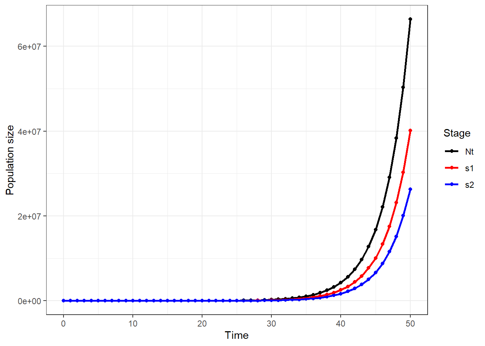
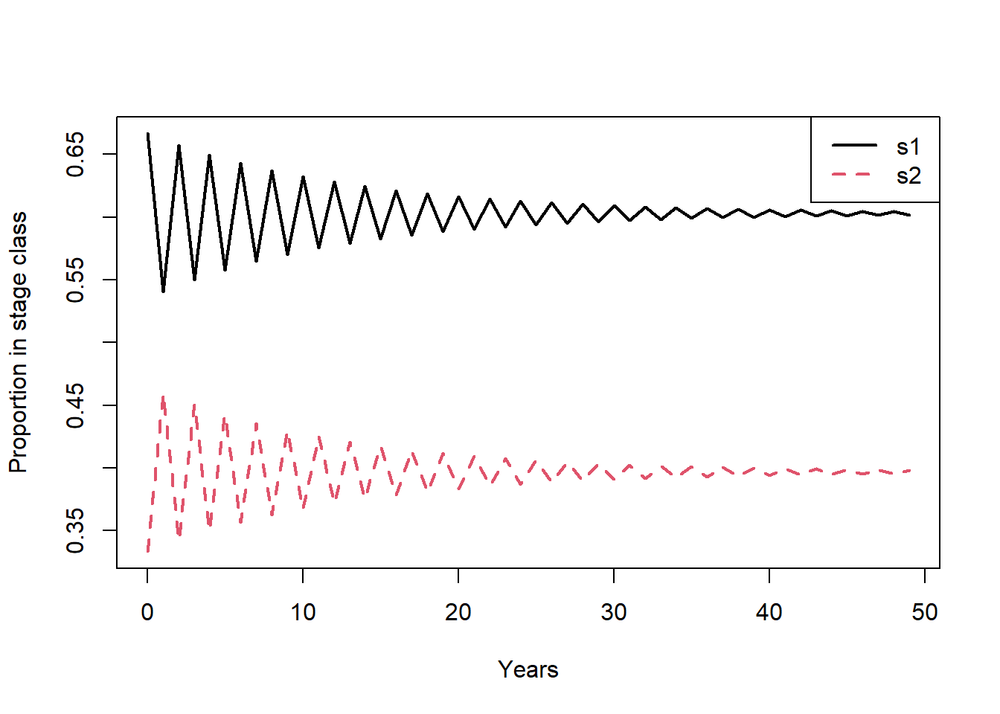
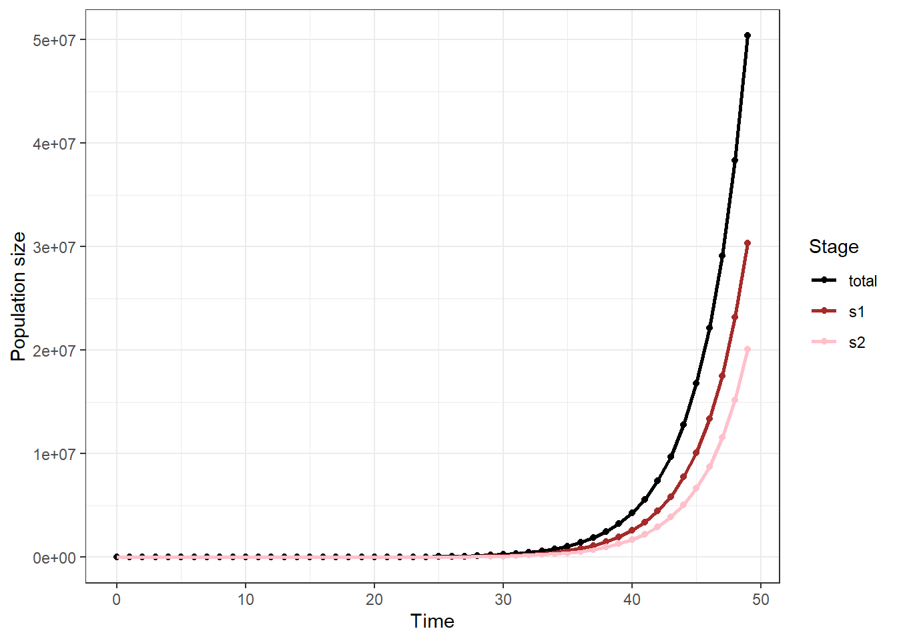
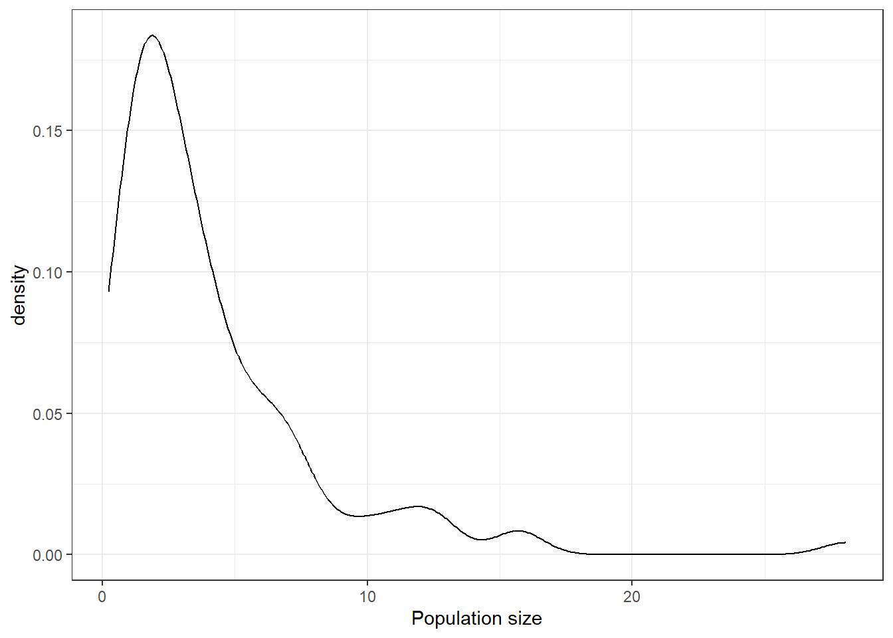
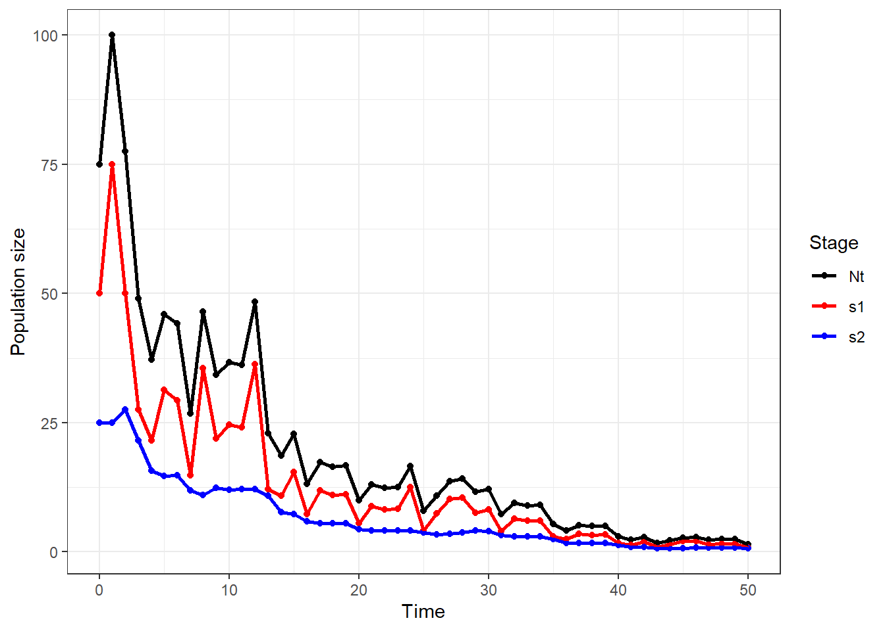

library(tidyverse)
## ── Attaching core tidyverse packages ──────────────────────── tidyverse 2.0.0 ──
## ✔ dplyr 1.1.4 ✔ readr 2.1.5
## ✔ forcats 1.0.0 ✔ stringr 1.5.1
## ✔ ggplot2 3.5.1 ✔ tibble 3.2.1
## ✔ lubridate 1.9.3 ✔ tidyr 1.3.1
## ✔ purrr 1.0.2
## ── Conflicts ────────────────────────────────────────── tidyverse_conflicts() ──
## ✖ dplyr::filter() masks stats::filter()
## ✖ dplyr::lag() masks stats::lag()
## ℹ Use the conflicted package (<http://conflicted.r-lib.org/>) to force all conflicts to become errors
p11 = 0
p21 = 0.8
p22 = 0.1
F12 = 2
# set up transition matrix
A = matrix(c(p11, F12, p21, p22), byrow = T, ncol = 2)
A
## [,1] [,2]
## [1,] 0.0 2.0
## [2,] 0.8 0.1Key for workshop 6 exercises
- Create a transition matrix for a 2 stage population where the the probability of stage 1 survival and stays in stage 1 = 0, the probability of survival of stage 1 and transition to stage 2 = 0.1, the survival of stage 2 = 0.8, and contribution of stage 2 to stage 1 = 2.
- Use the transition matrix from exercise 1 to simulate 50 years of a population with a starting population of 50 individuals in stage 1 and 25 individuals in stage 2. Plot the results.
# manual
s1 = 50
s2 = 25
#matrix of populations
p = matrix(c(s1, s2), ncol = 1)
p
## [,1]
## [1,] 50
## [2,] 25
years = 50
# place to store data
pop = tibble(time = 0:years,
Nt = NA,
s1 = NA,
s2 = NA)
pop$Nt[pop$time == 0] = sum(p)
pop$s1[pop$time == 0] = p[1]
pop$s2[pop$time == 0] = p[2]
pop
## # A tibble: 51 × 4
## time Nt s1 s2
## <int> <dbl> <dbl> <dbl>
## 1 0 75 50 25
## 2 1 NA NA NA
## 3 2 NA NA NA
## 4 3 NA NA NA
## 5 4 NA NA NA
## 6 5 NA NA NA
## 7 6 NA NA NA
## 8 7 NA NA NA
## 9 8 NA NA NA
## 10 9 NA NA NA
## # ℹ 41 more rows
for(i in 1:years){
p = A %*% p
pop$Nt[pop$time == i] = sum(p)
pop$s1[pop$time == i] = p[1]
pop$s2[pop$time == i] = p[2]
}
df = pop %>%
pivot_longer(Nt:s2, names_to = 'stage', values_to = 'n') %>%
mutate(stage = factor(stage, levels = c('Nt','s1','s2')))
ggplot(df, aes(time, n, color = stage)) +
geom_point() +
geom_line(size = 1) +
labs(x = 'Time', y = 'Population size', color = 'Stage') +
scale_color_manual(values = c('black', 'red', 'blue'))+
theme_bw()
## Warning: Using `size` aesthetic for lines was deprecated in ggplot2 3.4.0.
## ℹ Please use `linewidth` instead.
# popbio
library(popbio)
stages = c("s1", "s2")
# create projection matrix
A = matrix(c(p11, F12, p21, p22), byrow = T, ncol = 2, dimnames = list(stages, stages))
# vector of population sizes
n = c(50,25)
# run model
p = pop.projection(A = A, n = n, iterations = 50)
p
## $lambda
## [1] 1.313979
##
## $stable.stage
## s1 s2
## 0.6017881 0.3982119
##
## $stage.vectors
## 0 1 2 3 4 5 6 7 8 9
## s1 50 50.0 85.00 88.500 144.8500 156.0850 247.3685 274.4728 423.2369 481.4802
## s2 25 42.5 44.25 72.425 78.0425 123.6842 137.2364 211.6184 240.7401 362.6635
## 10 11 12 13 14 15 16 17
## s1 725.3270 842.9011 1244.8134 1473.123 2139.014 2570.898 3679.512 4481.389
## s2 421.4506 622.4067 736.5616 1069.507 1285.449 1839.756 2240.694 3167.679
## 18 19 20 21 22 23 24 25
## s1 6335.358 7803.757 10916.948 13577.707 18824.89 23606.82 32480.50 41018.96
## s2 3901.879 5458.474 6788.853 9412.444 11803.41 16240.25 20509.48 28035.35
## 26 27 28 29 30 31 32 33
## s1 56070.7 71237.41 96836.86 123663.54 167305.3 214592.2 289147.7 372262.3
## s2 35618.7 48418.43 61831.77 83652.66 107296.1 144573.9 186131.1 249931.3
## 34 35 36 37 38 39 40 41
## s1 499862.6 645605.9 864340.8 1119403.5 1494885.6 1940534 2585870 3363442
## s2 322803.0 432170.4 559701.8 747442.8 970267.1 1292935 1681721 2236868
## 42 43 44 45 46 47 48 49
## s1 4473737 5828881 7740867 10100296 13395417 17500015 23182668 30318290
## s2 2914440 3870433 5050148 6697708 8750007 11591334 15159145 20062049
##
## $pop.sizes
## [1] 7.500000e+01 9.250000e+01 1.292500e+02 1.609250e+02 2.228925e+02
## [6] 2.797692e+02 3.846049e+02 4.860913e+02 6.639770e+02 8.441438e+02
## [11] 1.146778e+03 1.465308e+03 1.981375e+03 2.542630e+03 3.424463e+03
## [16] 4.410654e+03 5.920206e+03 7.649067e+03 1.023724e+04 1.326223e+04
## [21] 1.770580e+04 2.299015e+04 3.062830e+04 3.984707e+04 5.298998e+04
## [26] 6.905431e+04 9.168940e+04 1.196558e+05 1.586686e+05 2.073162e+05
## [31] 2.746014e+05 3.591661e+05 4.752789e+05 6.221936e+05 8.226656e+05
## [36] 1.077776e+06 1.424043e+06 1.866846e+06 2.465153e+06 3.233469e+06
## [41] 4.267591e+06 5.600310e+06 7.388177e+06 9.699314e+06 1.279101e+07
## [46] 1.679800e+07 2.214542e+07 2.909135e+07 3.834181e+07 5.038034e+07
##
## $pop.changes
## [1] 1.233333 1.397297 1.245068 1.385071 1.255176 1.374722 1.263872 1.365951
## [9] 1.271345 1.358510 1.277761 1.352190 1.283265 1.346819 1.287984 1.342251
## [17] 1.292027 1.338364 1.295489 1.335054 1.298453 1.332236 1.300989 1.329834
## [25] 1.303158 1.327787 1.305013 1.326042 1.306599 1.324554 1.307954 1.323284
## [33] 1.309113 1.322202 1.310103 1.321278 1.310948 1.320490 1.311671 1.319818
## [41] 1.312288 1.319244 1.312816 1.318755 1.313266 1.318337 1.313651 1.317980
## [49] 1.313979
stage.vector.plot(p$stage.vectors)
# Plot using ggplot
pp = tibble(time = as.numeric(colnames(p$stage.vectors)),
s1 = p$stage.vectors[1,],
s2 = p$stage.vectors[2,],
total = p$pop.sizes) %>%
pivot_longer(s1:total, names_to = 'stage', values_to = 'n') %>%
mutate(stage = factor(stage,
levels =c('total','s1','s2')))
ggplot(pp, aes(time, n, color = stage)) +
geom_point() +
geom_line(size = 1) +
labs(x = 'Time', y = 'Population size', color = 'Stage') +
scale_color_manual(values = c('black', 'brown', 'pink'))+
theme_bw()
- Challenge: Using the 3 matrices below. Simulate the same population above. Use a probability of 0.5 for average year, 0.3 for poor year, and 0.2 for good year. Plot your results
\[ average = \begin{bmatrix} 0&2 \\ 0.1&0.8 \end{bmatrix}\] \[ poor = \begin{bmatrix} 0&1 \\ 0.1&0.6 \end{bmatrix}\]
\[ good = \begin{bmatrix} 0&3 \\ 0.1&0.8 \end{bmatrix}\]
stages = c("s1", "s2")
average = matrix(c(0, 2, 0.1, 0.8), byrow = T, ncol = 2, dimnames = list(stages, stages))
poor = matrix(c(0, 1, 0.1, 0.6), byrow = T, ncol = 2, dimnames = list(stages, stages))
good = matrix(c(0, 3, 0.1, 0.8), byrow = T, ncol = 2, dimnames = list(stages, stages))
As = list(average, poor, good)
# popbio
# starting population size
n = c(50,25)
names(n) = c('s1','s2')
# unequal probabilities for projection matrices
pop = stoch.projection(matrices = As, n0 = n, nreps = 100, prob = c(0.5, 0.3, 0.2))%>%
as_tibble() %>%
mutate(time = row_number(),
Nt = s1+ s2)
ggplot(pop, aes(Nt)) +
geom_density() +
labs(x = 'Population size') +
theme_bw()
# manual with size over time
s1 = 50
s2 = 25
#matrix of populations
p = matrix(c(s1, s2), ncol = 1)
p
## [,1]
## [1,] 50
## [2,] 25
years = 50
# place to store data
pop = tibble(time = 0:years,
Nt = NA,
s1 = NA,
s2 = NA)
pop$Nt[pop$time == 0] = sum(p)
pop$s1[pop$time == 0] = p[1]
pop$s2[pop$time == 0] = p[2]
pop
## # A tibble: 51 × 4
## time Nt s1 s2
## <int> <dbl> <dbl> <dbl>
## 1 0 75 50 25
## 2 1 NA NA NA
## 3 2 NA NA NA
## 4 3 NA NA NA
## 5 4 NA NA NA
## 6 5 NA NA NA
## 7 6 NA NA NA
## 8 7 NA NA NA
## 9 8 NA NA NA
## 10 9 NA NA NA
## # ℹ 41 more rows
for(i in 1:years){
A = sample(As, size = 1, prob= c(0.5,0.3,0.2))
p = A[[1]] %*% p
pop$Nt[pop$time == i] = sum(p)
pop$s1[pop$time == i] = p[1]
pop$s2[pop$time == i] = p[2]
}
df = pop %>%
pivot_longer(Nt:s2, names_to = 'stage', values_to = 'n') %>%
mutate(stage = factor(stage, levels = c('Nt','s1','s2')))
ggplot(df, aes(time, n, color = stage)) +
geom_point() +
geom_line(size = 1) +
labs(x = 'Time', y = 'Population size', color = 'Stage') +
scale_color_manual(values = c('black', 'red', 'blue'))+
theme_bw()